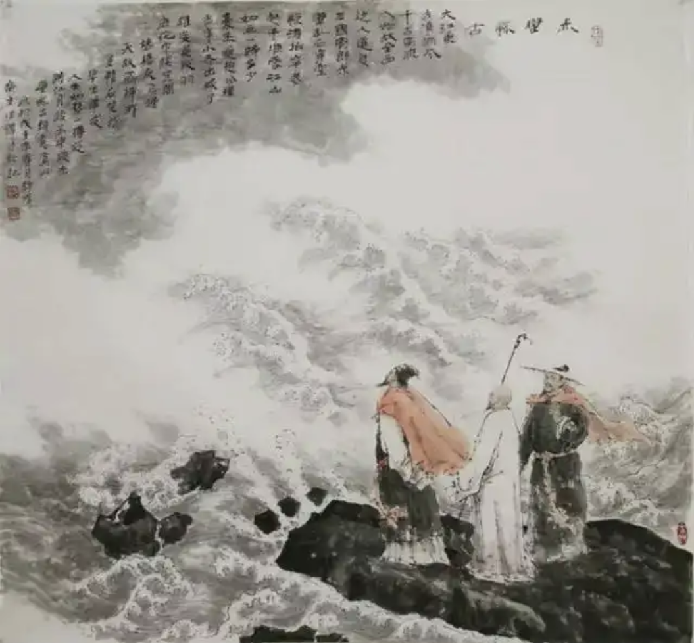

CHANGZHOU
He died of illness shortly after reuniting with Su Che, at the age of
64.
Accept it calmly and be calm and composed.
《六月二十日夜渡海》
参横斗转欲三更，苦雨终风也解晴。
云散月明谁点缀？天容海色本澄清。
空余鲁叟乘桴意，粗识轩辕奏乐声。
九死南荒吾不恨，兹游奇绝冠平生。
Crossing the Sea by Night on the Twentieth Day of the Sixth
Month
The Big Dipper is turning and it is almost three o'clock in the
morning.The bitter rain finally ends and the wind clears up.
Who
will adorn the bright moon when the clouds disperse?The sky and the
sea are originally clear.
The old man from Lu is left with the
idea of riding a raft.I roughly recognize the music played by
Xuanyuan.
I don't regret dying in the southern wilderness.This
trip is the most amazing one in my life.

This poem captures the sense of adventure and reflection during a sea
voyage, set against the backdrop of nature’s vastness and mystery. The
journey is symbolic of life's uncertainties and the courage required to
face them. The poet reflects on his willingness to face death without
regret, finding peace in the adventure itself rather than in the
destination.